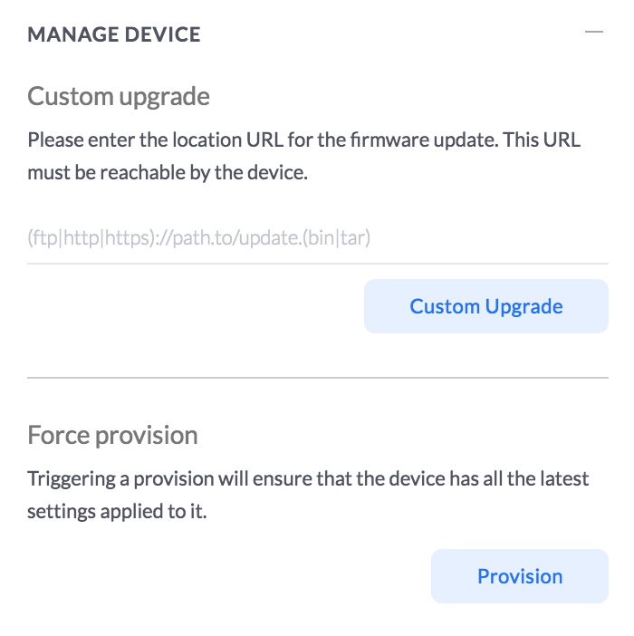
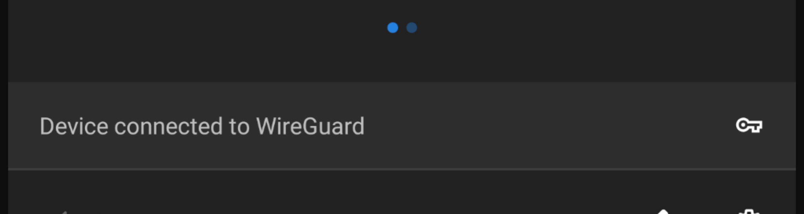

WireGuard + UniFi
WireGuard + UniFi
I have been looking around for a good VPN solution to use on the road recently. I have a few services running at home, that I really don't want on the internet (OctoPrint etc), but I want to use remotely.
This is as much documentation for future me as it is for anyone who stumbles across this page :)
I had previously set up a L2TP Remote user VPN in the UniFi controller, but it had a few issues.
Roaming problems on mobile
Battery usage on mobile
Slow Speeds
I had heard of Wireguard a while ago (I think they had a stall near the OpenStack stall in FOSDEM last year), but I had completely forgotten about them. It turns out some kind soul has created a deb package to install WireGuard on Vyatta (which is what the USG is based on).
Installation
-
Pick up the correct .deb from here
curl -sL https://github.com/Lochnair/vyatta-wireguard/releases/download/<version>/wireguard-<board>-<version>.deb -o wireguard-<board>-<version>.debworked for meIn my case, version was
0.0.20190123-1and board wasugw3
sudo dpkg -i wireguard-<board>-<version>-1.debto install the packagesudo -ito make everything easierumask 077 && mkdir wireguard && cd wireguardfor the server keyswg genkey | tee wg_private.key | wg pubkey > wg_public.keyto create server keyswg genkey | tee client1_private.key | wg pubkey > client1_public.keyto create the first client keys. You will need one of these keys for each client connecting to the VPNThen we move over to the UniFi controller to create the config for the VPN
config.gateway.json
UniFi gateways are pretty similar to EdgeRouter products from Ubiquiti, with a crucial difference. Any config changes done from the CLI are wiped out on reboots, or any config changes from the controller. the UniFi Controller is nice, but does not support the full range of EdgeOS features that we can use.
Thankfully there is a solution - config.gateway.json. This file is layered over the base config that gets generated by UniFi, and allows much more control of a USG.
I created this file in my UniFi controller (for me, on Ubuntu the right location is /usr/lib/unifi/data/sites/<site-id>/config.gateway.json).
{ "firewall": { "group": { "network-group": { "remote_user_vpn_network": { "description": "Remote User VPN subnets", "network": [ "10.255.252.0/24", ] } } } }, "interfaces": { "wireguard": { "wg0": { "description": "VPN for remote clients", "address": [ "10.255.252.1/24" ], "firewall": { "in": { "name": "LAN_IN" }, "local": { "name": "LAN_LOCAL" }, "out": { "name": "LAN_OUT" } }, "listen-port": "443", "mtu": "1352", "peer": [ { "<content of client1_public.key>": { "allowed-ips": [ "10.255.252.2/32" ], "persistent-keepalive": 60 } } ], "private-key": "/config/auth/wireguard/wg_private.key", "route-allowed-ips": "true" } } } }
Client Configs
Next up - lets add some client configs. First device I wanted to add (as I was at home, and wanted to make sure this worked from outside the network, and is the main device I seem to want remote access from) is my Android phone.
So, I created the following config:
[Interface] PrivateKey = <content of client1_private.key> Address = 10.255.252.2/24 DNS = <internal DNS Server> [Peer] PublicKey = <content of wg_public.key> Endpoint = <external-fqdn>:443 AllowedIPs = <local subnets>, 10.255.252.0/24
Then qrencode -t ansiutf8 < wireguard.conf printed a qrcode on my console
that I could import the config into the Android app
For my laptop, it is pretty easy as well, simply brew install wireguard-tools
and then create a similar file. We have to re run the wg genkey | tee client1_private.key | wg pubkey > client1_public.key
and add an extra peer to the config.gateway.json file, for each new client, but that is all the config we need.
Starting it all up
You will also have to allow udp/443 to pass through the firewall. I created a rule in the GUI that allows udp/443 on the WAN_LOCAL group.
Now, to force the provisioning for the USG, just go to your unifi controller, then find the device. In the settings (the cog icon) for the device find the following section:
and trigger a force provision.
Then when it is deployed, you can start the tunnel on your end device!
To check if the wireguard service is actually listening, you can run netstat and see if there is anything listening on udp/443
root@edge:~# netstat -npl | grep 443 | grep udp udp 0 0 0.0.0.0:443 0.0.0.0:* - udp6 0 0 :::443 :::* -
You should see the following on the android settings pull down:
and on the USG, you can see the far side of the tunnel:
root@edge:~# show interfaces wireguard wg0 endpoints <content-of-client1_public.key file> 212.129.73.196:50453
On OSX, make sure the config file is named like an interface (wg0.conf etc), and run
wg-quick up <path/to/config/file> - and you will be connected.
Footnotes + Thanks
I did not figure any of this out myself - mbello filled in most of it from his post on the UniFi Forums
The OSX tooling was from a post called Cheatsheet for setting up a WireGuard client on a Mac
This has been up for a day or so, and the roaming on mobile has been great. Even when I walk into the house, and connect to the home network, the overhead is so small, I don't notice any issues.
If I hit any issues, I will update this page with more details.
Happy VPNing!
Comments
Comments powered by Disqus